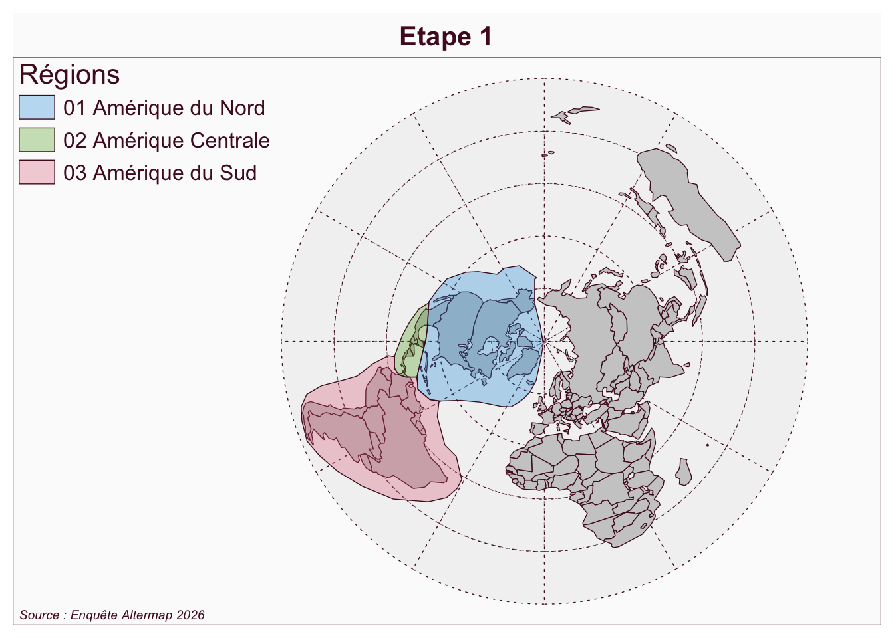
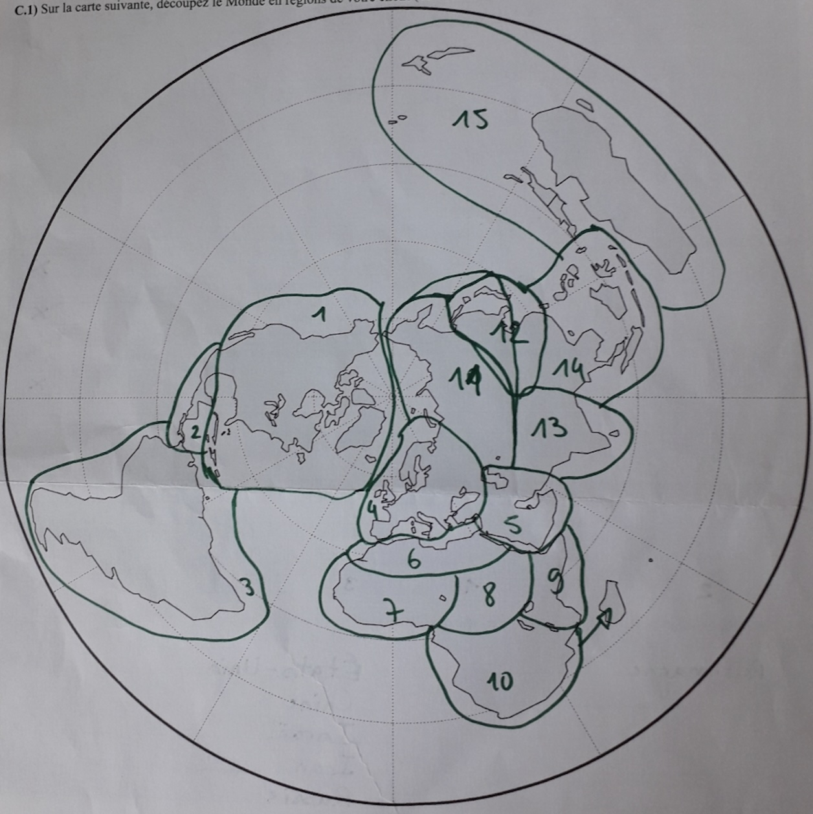
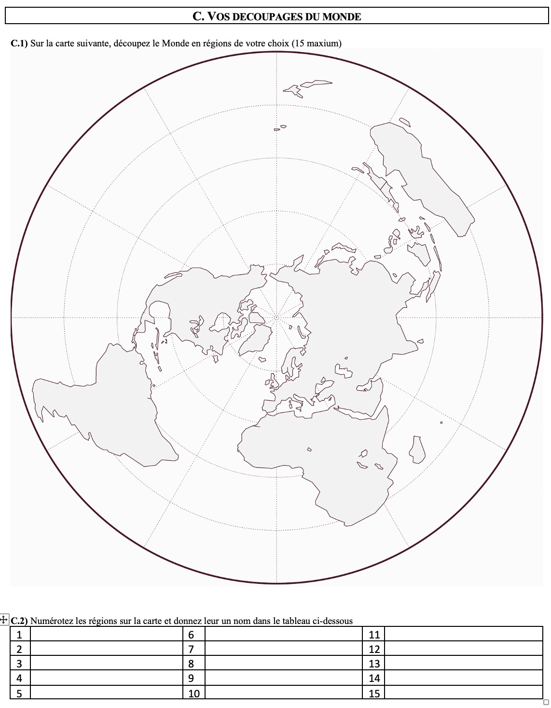
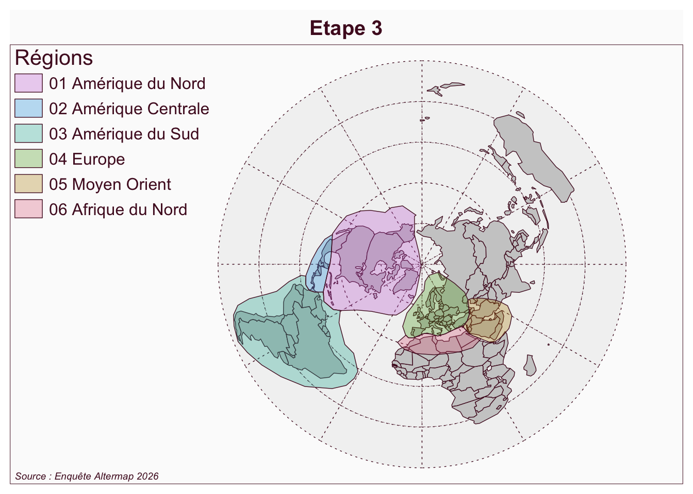
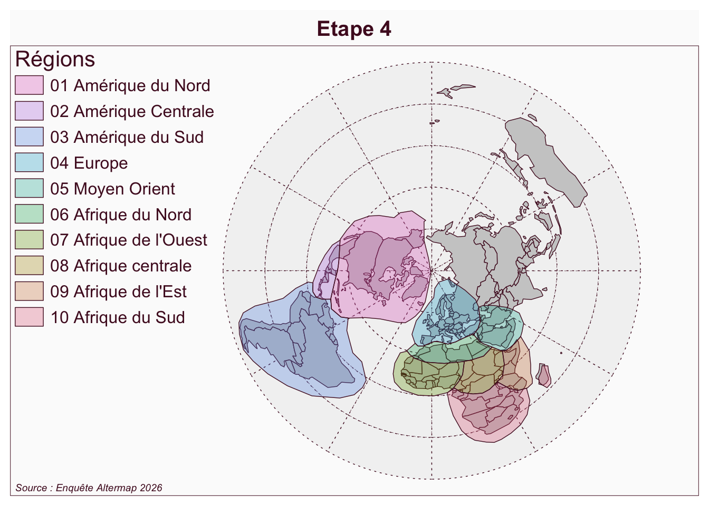
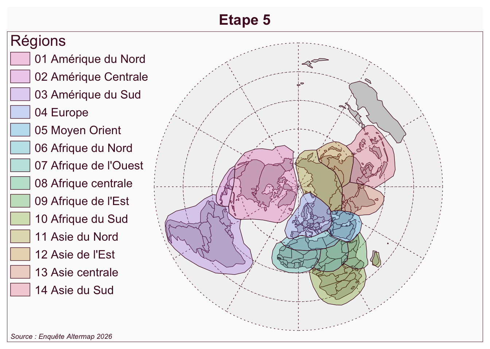
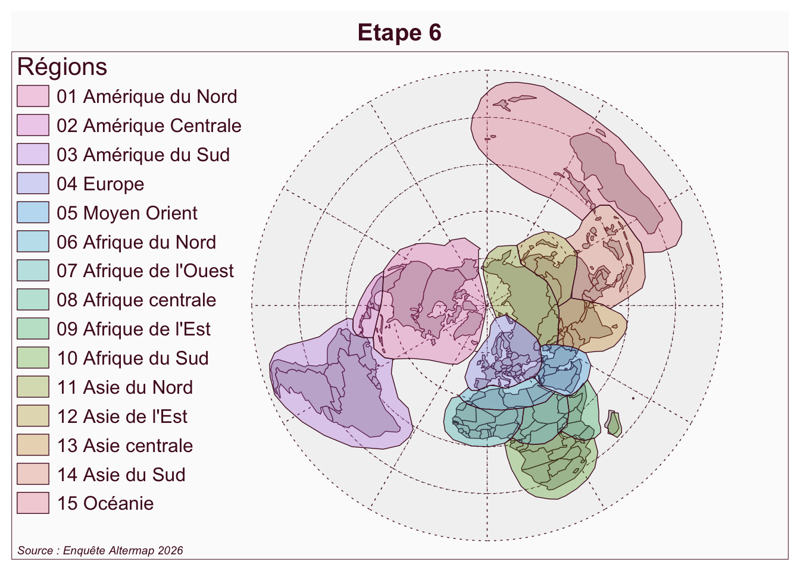
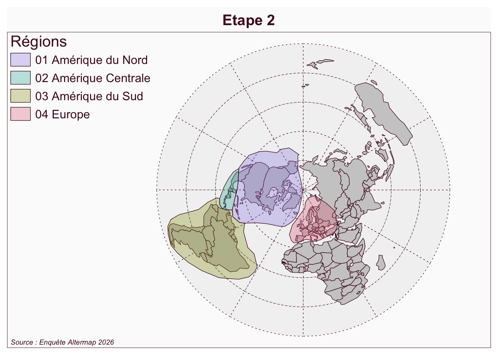

![]()

L’objectif de ce billet est de présenter une petite expérience de découpage commentée d’une carte mentale. Nous pensions initialement réaliser une video du découpage mais suite à une erreur de manipulation nous n’avons pu conserver que la bande son. Celle-ci permet de retracer les étapes suivies par la personne enquêtée (ordre du découpage) ainsi que les hésitations et les choix qui sont effectués.
Nous avons interrogé ici un étudiant de master 1 de géographie qui a d’abord répondu au questionnaire habituel sur les découpages du Monde, puis qui a procédé au découpage du Monde en environ neuf minutes. Nous reprenons ci-dessous les commentaires qu’il a effectué en ajoutant le minutage à partir du début de l’opération. Et nous montrons visuellement les étapes de construction du découpage qui ont abouties à la carte finale que voici

(0) Départ
- 0:00 Enquêteur : on vous demande de découper le Monde en 2 à 15 régions
- 0:20 Vous voulez faire un peu du Harvey . ..
- 0:30 Enquêteur : Non, c’est comment vous vous découperiez le Monde si on vous demandait de la faire. Découper en 2 à 15 régions, mettre des numéros et des noms aussi …

(1) Les trois Amériques
- 1:41 : D’accord Je mettrai … comme ça … Amérique du Nord
- 1.54 : Je pense que je découperai quand même … je mettrai Amérique Centrale …
- 2:10 : … Amérique du Sud
(3) Moyen-Orient, Proche-Orient et Afrique du Nord ?
- 3:30 : Quand même j’incluerai le Moyen-Orient mais je n’inclus pas l’Egypte. … J’aurais aussi pu faire … Proche-orient ….
- 3:45 : Euh … Je ferai l’Afrique du Nord sans l’appeler Maghreb car je pense que l’Egypte c’est pas le Maghreb …

(4) L’Afrique subsaharienne en quatre région culturelles
- 4:00 Là c’est compliqué … c’est un peu compliqué … Là je pense que déjà on va faire ça … Tac ! … Afrique de l’Ouest.
- 4:21 : Là c’est plus compliqué parce que pour moi je découperai … je mettrai … mais je ne sais pas forcément les … nommer.
- 4:48 : Moi je trouve que l’Afrique de l’Est, l’Afrique centrale et l’Afrique du Sud ont des cultures vraiment différentes, donc je les découperai aussi… Alors les découpages d’un point de vue géographique ne sont pas les plus précis… par rapport aux pays, principalement (le fonds de carte ne comportait pas les limites de pays)
- 5:25 Et Afrique du Sud, pas dans le sens du pays, bien sûr… OK … J’ai oublié d’inclure Madagascar…. Je pense que ça va quand même plus avec le Sud (ajoute une flèche)

(5) L’Asie lointaine et compliquée
- 5:43 : Euh … Je pense que je ferai … quelque chose comme ça (trace une région incluant Russie, Chine Japon, Corée) … Comment est-ce qu’on appelle ça ? … Euh … Asie du Nord … Asie Centrale
- 6:34 : Ah ! Houla non, … Houla … Plutôt comme ça (redécoupe l’Asie du Nord pour séparer la Russie de Chine, Japon et Corée) … et ici je mettrai …. Attendez … Asie de l’Est. Je pense quand même comme ça. (ajoute l’Asie du Sud)
- 8:04 : Non … C’est pas pour diviser … mais les cultures sont tellement différentes … on ne peut pas toutes les mettre dans le même panier…

(6) L’Océanie pour finir
- 8:24 : Et j’ajoute l’Océanie que je ne connais pas très bien
- 9:00 : (terminé)

Citation
BibTeX citation:
@online{grasland2026,
author = {Grasland, Claude},
title = {Une Carte Mentale Commentée},
date = {2026-04-17},
url = {https://altermap.github.io/fr/posts/2026-04-17-carte-comment/},
langid = {en}
}
For attribution, please cite this work as:
Grasland, Claude. 2026. “Une Carte Mentale Commentée.”
April 17, 2026. https://altermap.github.io/fr/posts/2026-04-17-carte-comment/.
(2) Comment est-ce qu’on découpe l’Europe ?
